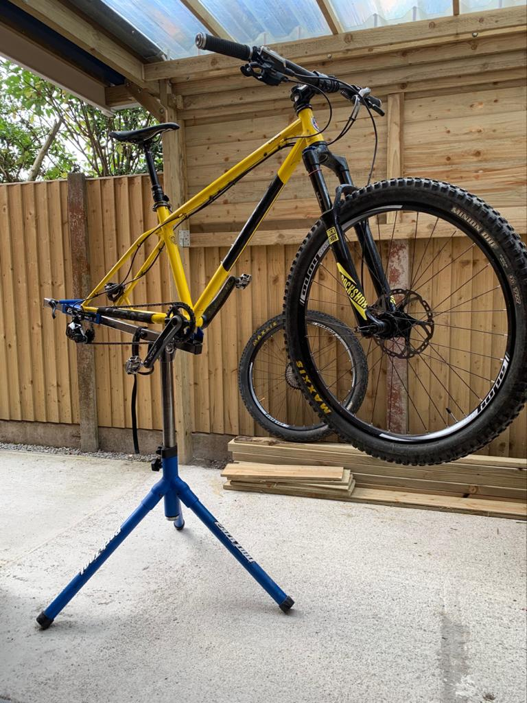

Based in Macclesfield, Cheshire, The Bicycle Repair Shop Ltd provides repair and service of all styles of bikes. Customers include leisure, road, track, MTB’s and family cyclists. Run by David, a lifelong cyclist involving track, road racing and mountain biking, he has developed a passion for bicycle maintenance with experience gained over many years from working on his own bikes as well as attending City & Guilds accredited bicycle maintenance training courses.